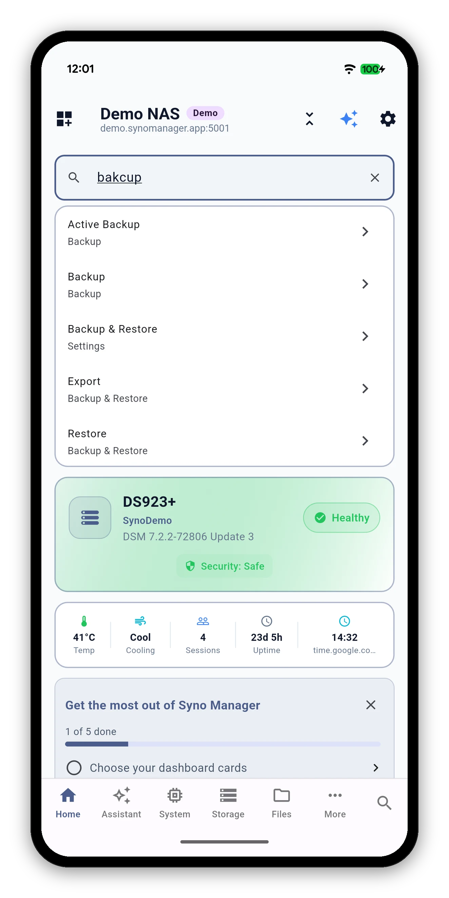
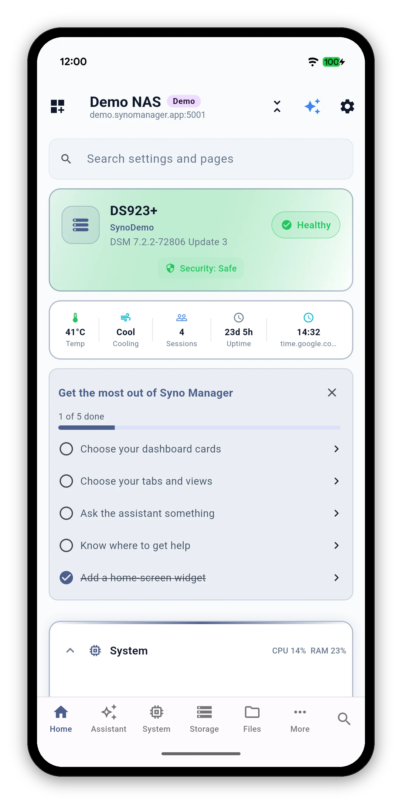
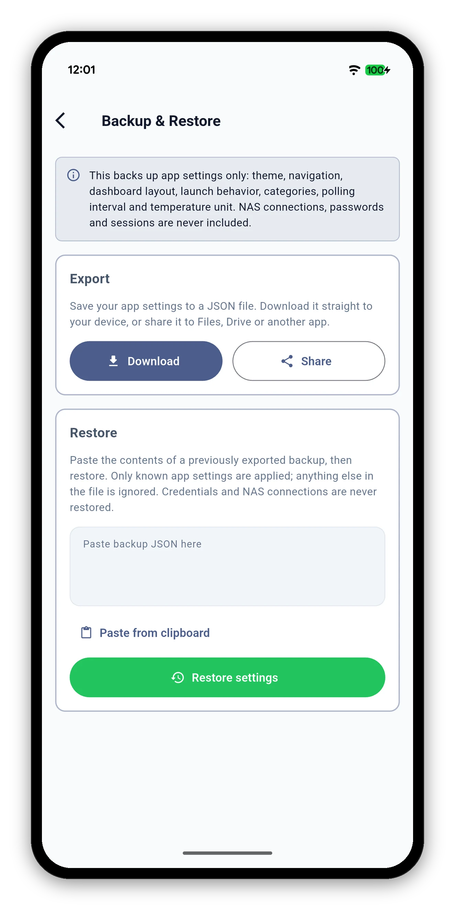

Your Synology NAS is packed with features and nobody remembers where they all live. Type what you want, in your own language or in English, and Syno Manager opens the setting or page that holds it.

| Where | What you do |
|---|---|
| Home screen | Tap the Search settings and pages box at the top of the dashboard. |
| Tab bar | Tap the search icon at the right end of the bottom bar, from any tab. |

Search covers the app's settings and every view inside every tab. Each result shows where it lives, so Restore reads Backup & Restore underneath.

A wrong letter, a missing letter, an extra letter or two swapped letters still finds the right thing.
| You type | It finds |
|---|---|
| bakcup | Backup |
| bakup | Backup |
| volumme | Volume |
| dokcer | Docker |
Reorder cards, choose your tabs and hide the views you never open.